| 슬라임 벽 | 슬라임이 그려진 흰색 블록 ※ 빌더 하트 100 교환 (잠금 해제) |
하얀 바위 3 기름 1 |
텅 빈 섬 작업대 | |
| 추억의 지붕 | 어디선가 본 적 있는 지붕의 블록 | 흙 3 | 도트 디코더 | |
| 머신의 벽 | 조금 신비로운 금속제 벽 ■ 색 변경 가능 |
시도늄 2 | 텅 빈 섬 작업대 | |
| 머신의 빛나는 벽 | 조금 신비로운 빛나는 금속제 벽 ■ 색 변경 가능 |
시도늄 2 파괴의 모래 2 |
텅 빈 섬 작업대 | |
| 머신의 벽 - 상 | 조금 신비로운 금속제 벽의 상부 ■ 색 변경 가능 |
시도늄 2 | 텅 빈 섬 작업대 | |
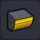 |
머신의 벽 - 하 | 조금 신비로운 금속제 벽의 하부 ■ 색 변경 가능 |
시도늄 2 | 텅 빈 섬 작업대 |
| 머신의 모서리 벽 | 조금 신비로운 금속제 벽의 모서리 부분 ■ 나란히 놓으면 자동으로 변화 / 색 변경 가능 |
시도늄 4 | 텅 빈 섬 작업대 | |
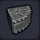 |
철 라운드 코너 | 철을 굳혀 만든 벽의 모서리 부분 | 철괴 4 | 텅 빈 섬 작업대 |
| 통나무 - 세로 | 나무를 잘라 만든 통나무 기둥 | 목재 3 | 텅 빈 섬 작업대 | |
| 묶음 통나무 - 세로 | 끈으로 묶은 통나무 기둥 ※ 빌더 하트 20 교환 (잠금 해제) |
목재 3 실 3 |
텅 빈 섬 작업대 | |
| 뾰족한 통나무 | 끄트머리를 깎은 통나무 기둥 | 목재 3 | 텅 빈 섬 작업대 | |
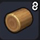 |
통나무 - 가로 | 나무를 잘라 만든 통나무 기둥 ■ 모서리에 놓으면 자동으로 변화 |
목재 3 | 텅 빈 섬 작업대 |
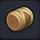 |
묶음 통나무 - 가로 | 끈으로 묶은 통나무벽 ※ 빌더 하트 20 교환 (잠금 해제) |
목재 3 실 3 |
텅 빈 섬 작업대 |
| 철 통나무 받침대 - 상 | 나무를 잘라 만든 통나무 기둥의 상단 ※ 빌더 하트 20 교환 (잠금 해제) |
철괴 3 | 텅 빈 섬 작업대 | |
| 철 통나무 받침대 - 하 | 나무를 잘라 만든 통나무 기둥의 하단 ※ 빌더 하트 20 교환 (잠금 해제) |
철괴 3 | 텅 빈 섬 작업대 | |
| 철 통나무 받침대 - 가로 | 나무를 잘라 만든 통나무벽의 끄트머리 ※ 빌더 하트 20 교환 (잠금 해제) |
철괴 3 | 텅 빈 섬 작업대 | |
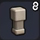 |
돌 난간 | 돌로 만들어진 난간 ■ 나란히 세우면 연결된다 / 색 변경 가능 ※ 빌더 하트 20 교환 (잠금 해제) |
석재 3 | 텅 빈 섬 작업대 |
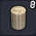 |
돌 원기둥 | 성 기둥에 쓰이는 블록 ■ 나란히 놓으면 자동으로 변화 |
대리석 2 | 텅 빈 섬 작업대 |
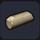 |
부서진 원기둥 | 성 기둥에 쓰였던 부서진 블록 | 돌 원기둥 1 | 그루터기 작업대 |
| 큰 돌 원기둥 | 성 기둥의 토대에도 쓰이는 큰 원기둥 | 대리석 2 | 텅 빈 섬 작업대 | |
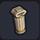 |
성의 큰 기둥 | 크고 호화로운 장식이 들어간 돌기둥 ※ 빌더 하트 50 교환 (잠금 해제) |
대리석 2 금괴 1 |
텅 빈 섬 작업대 |
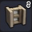 |
성의 창문 | 성에 쓰이는 튼튼한 창문 ■ 나란히 놓으면 자동으로 변화 ※ 빌더 하트 20 교환 (잠금 해제) |
대리석 2 유리 1 |
텅 빈 섬 작업대 |
| 스테인드글라스 | 알록달록하게 조립된 예쁜 유리 창문 ■ 나란히 놓으면 자동으로 변화 |
유리 3 대리석 1 |
텅 빈 섬 작업대 | |
| 성의 창문 장식 | 문 위에 거는 장식 ■ 색 변경 가능 ※ 빌더 하트 20 교환 (잠금 해제) |
대리석 2 | 텅 빈 섬 작업대 | |
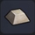 |
성의 화살막이 돌 | 성의 꼭대기를 장식하는 희고 아름다운 돌 ※ 빌더 하트 10 교환 (잠금 해제) |
대리석 2 | 텅 빈 섬 작업대 |
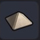 |
성의三 모서리돌 | 성의 꼭대기를 장식하는 피라미드 모양 돌 ※ 빌더 하트 10 교환 (잠금 해제) |
대리석 2 | 텅 빈 섬 작업대 |
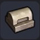 |
돌 바닥 장식재A | 돌을 둥글게 다듬어 만든 바닥 장식재 ※ 빌더 하트 20 교환 (잠금 해제) |
석재 3 | 텅 빈 섬 작업대 |
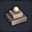 |
돌 바닥 장식B | 사각형 돌을 반복해 깐 바닥 장식재 ※ 빌더 하트 20 교환 (잠금 해제) |
석재 3 | 텅 빈 섬 작업대 |
| 성의 뾰족한 지붕 | 멀리까지 감시할 수 있는 성탑의 지붕 부분 ■ 색 변경 가능 ※ 빌더 하트 50 교환 (잠금 해제) |
대리석 5 금괴 1 |
텅 빈 섬 작업대 | |
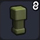 |
사교의 난간 | 돌로 만들어진 하곤성의 난간 ■ 나란히 세우면 연결된다 ※ 빌더 하트 20 교환 (잠금 해제) |
파괴의 모래 5 석재 1 |
텅 빈 섬 작업대 |
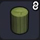 |
사교의 원기둥 | 하곤성의 기둥에 쓰이는 초록색 원기둥 ■ 나란히 놓으면 자동으로 변화 |
파괴의 모래 5 뼈 1 |
텅 빈 섬 작업대 |
| 사교의부서진 원기둥 | 하곤성 기둥에 쓰였던 부서진 블록 | 사교의 원기둥 1 | 그루터기 작업대 | |
| 사교의 큰 원기둥 | 하곤성 기둥의 토대에도 쓰이는 큰 원기둥 ※ 빌더 하트 20 교환 (잠금 해제) |
파괴의 모래 5 뼈 1 |
텅 빈 섬 작업대 | |
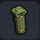 |
사교의 큰기둥 | 크고 불길한 장식이 들어간 돌기둥 ※ 빌더 하트 50 교환 (잠금 해제) |
파괴의 모래 6 뼈 2 |
텅 빈 섬 작업대 |
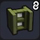 |
사교의 창문 | 하곤성에 쓰이는 튼튼한 창문 ■ 나란히 놓으면 자동으로 변화 ※ 빌더 하트 20 교환 (잠금 해제) |
파괴의 모래 5 유리 1 |
텅 빈 섬 작업대 |
| 사교의 스테인드글라스 | 수상한 색조합의 유리 창문 ■ 나란히 놓으면 자동으로 변화 |
유리 3 석재 1 파괴의 모래 1 |
텅 빈 섬 작업대 | |
| 사교의 창문 장식 | 하곤성의 문 위에 거는 장식 ※ 빌더 하트 20 교환 (잠금 해제) |
파괴의 모래 5 뼈 1 |
텅 빈 섬 작업대 | |
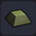 |
사교의 화살막이 돌 | 하곤성의 꼭대기를 장식하는 불길한 돌 ※ 빌더 하트 20 교환 (잠금 해제) |
파괴의 모래 5 뼈 1 |
텅 빈 섬 작업대 |
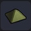 |
사교의 삼각돌 | 돌로 만들어진 피라미드 모양의 하곤성 장식 ※ 빌더 하트 20 교환 (잠금 해제) |
파괴의 모래 5 뼈 1 |
텅 빈 섬 작업대 |
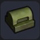 |
사교의 바닥 장식A | 돌을 둥글게 다듬어 만든 하곤성의 바닥 장식재 ※ 빌더 하트 20 교환 (잠금 해제) |
파괴의 모래 5 뼈 1 |
텅 빈 섬 작업대 |
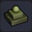 |
사교의 바닥 장식B | 사각형 돌을 반복해 깐 하곤성의 바닥 장식재 ※ 빌더 하트 20 교환 (잠금 해제) |
파괴의 모래 5 뼈 1 |
텅 빈 섬 작업대 |
| 사교의 뾰족한 지붕 | 하곤성에 우뚝 솟아 있는 탑의 끄트머리 ■ 색 변경 가능 ※ 빌더 하트 50 교환 (잠금 해제) |
파괴의 모래 8 뼈 2 금괴 1 |
텅 빈 섬 작업대 | |
| 사교의 얼굴 장식 | 파괴신 얼굴을 모티브로 만든 불길한 장식 ※ 빌더 하트 20 교환 (잠금 해제) |
파괴의 모래 5 뼈 1 |
텅 빈 섬 작업대 | |
| 사교의 릴리프 | 하곤 교단의 건물 벽 등에 사용되는 장식 ※ 빌더 하트 20 교환 (잠금 해제) |
파괴의 모래 5 뼈 1 |
텅 빈 섬 작업대 | |
| 사교의 큰 심볼 | 하곤 교단의 상징적인 블록 ※ 빌더 하트 100 교환 (잠금 해제) |
파괴의 모래 8 뼈 3 |
텅 빈 섬 작업대 | |
| 사교의 큰 릴리프 | 하곤 교단의 제단 벽에 쓰이는 블록 | 파괴의 모래 6 뼈 2 |
텅 빈 섬 작업대 | |
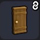 |
판자 문 | 나무판을 연결해 손잡이를 단 문 ■ 나란히 놓으면 양문형 문이 된다 / 색 변경 가능 |
목재 2 | 텅 빈 섬 작업대 |
| 수문 | 목재를 연결해서 만든 수조에 다는 문 ■ 문을 열면 물이 흐른다 |
목재 3 | 텅 빈 섬 작업대 | |
| 감옥의 문 | 철로 만들어진 매우 견고한 문 ■ 문 / 나란히 놓으면 양문형 문이 된다 |
철괴 2 | 텅 빈 섬 작업대 | |
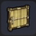 |
짚 문 | 풀과 나뭇가지로 만들어진 원시적인 문 ■ 문 ※ 빌더 하트 10 교환 (잠금 해제) |
마른 풀 4 목재 1 |
텅 빈 섬 작업대 |
| 컬러 도어 | 나무로 만든 빨간 문 ■ 문 / 색 변경 가능 |
목재 10 | 텅 빈 섬 작업대 | |
| 천막 문 | 풀 실을 엮어 만든 천막 ■ 문 / 색 변경 가능 |
풀 실 2 목재 1 |
텅 빈 섬 작업대 | |
| 나무 문 | 나무판을 연결해서 금속으로 보강한 문 ■ 문 / 색 변경 가능 |
목재 2 철괴 1 |
텅 빈 섬 작업대 | |
| 마법의 문 | 철을 늘려 붉게 칠한 문 ■ 문 / 색 변경 가능 |
목재 3 철괴 1 |
텅 빈 섬 작업대 | |
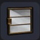 |
유리 문 | 유리로 되어 안쪽이 보이는 문 ■ 문 / 색 변경 가능 |
유리 1 동괴 2 |
텅 빈 섬 작업대 |
| 강철 대문 | 모든 것이 강철로 만들어진 거대한 문 ■ 문 / 색 변경 가능 ※ 빌더 하트 50 교환 (잠금 해제) |
강철괴 6 | 텅 빈 섬 작업대 | |
| 마물의 문 | 무언가의 뼈로 장식한 두껍고 튼튼한 문 ■ 문 |
시도늄 5 뼈 3 |
텅 빈 섬 작업대 | |
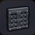 |
철제 대문 | 많은 철을 사용해 만든 두껍고 튼튼한 문 ■ 문 |
철괴 8 | 텅 빈 섬 작업대 |
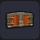 |
옥좌 문 | 왕의 방으로 향하는 통로에 놓는 화려하고 거대한 문 ■ 문 / 색 변경 가능 |
강철괴 4 목재 6 |
텅 빈 섬 작업대 |
| 철 성문 | 성을 방어하는 커다란 출입문 ■ 문 |
철괴 10 목재 3 |
텅 빈 섬 작업대 | |
| 세련된 펜스 | 나무로 된 농업용 개폐식 울타리 ■ 문 / 색 변경 가능 ※ 빌더 하트 20 교환 (잠금 해제) |
목재 2 실 2 |
텅 빈 섬 작업대 | |
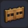 |
나무 펜스 | 나무로 된 개폐식 울타리 ■ 문 / 색 변경 가능 |
목재 2 실 2 |
텅 빈 섬 작업대 |
| 웨스턴 도어 | 나무판을 구리 경첩으로 연결한 폭이 좁은 개폐 문 ■ 문 / 색 변경 가능 |
목재 2 동괴 1 |
텅 빈 섬 작업대 | |
| 나무 울타리 - 대각선 | 나무로 만들어진 마물의 막이용 울타리 ■ 색 변경 가능 ※ 빌더 하트 10 교환 (잠금 해제) |
목재 3 실 1 |
텅 빈 섬 작업대 | |
| 나무 울타리 | 둥굴게 가공한 나무 울타리 ■ 나란히 세우면 연결된다 / 색 변경 가능 |
목재 3 | 텅 빈 섬 작업대 | |
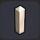 |
세련된 울타리 | 네모나게 가공해 연결할 수 있는 나무 울타리 ■ 나란히 세우면 연결된다 / 색 변경 가능 ※ 빌더 하트 10 교환 (잠금 해제) |
목재 3 | 텅 빈 섬 작업대 |
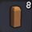 |
나무 난간 | 나무로 만들어진 난간 ■ 나란히 세우면 연결된다 / 색 변경 가능 ※ 빌더 하트 20 교환 (잠금 해제) |
목재 3 | 텅 빈 섬 작업대 |
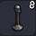 |
철 난간 | 가늘게 가공한 연결할 수 있는 철봉 ■ 나란히 세우면 연결된다 ※ 빌더 하트 20 교환 (잠금 해제) |
철괴 1 실 2 |
텅 빈 섬 작업대 |
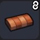 |
벽돌담 | 벽돌로 만들어진 낮은 담 ■ 모서리에 놓으면 자동으로 변화 ※ 빌더 하트 20 교환 (잠금 해제) |
흙 3 | 텅 빈 섬 작업대 |
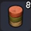 |
사암 기둥 | 사암이 여러 겹으로 쌓인 모래 기둥 ■ 나란히 놓으면 자동으로 변화 ※ 빌더 하트 20 교환 (잠금 해제) |
모래 2 적산암 1 |
텅 빈 섬 작업대 |
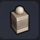 |
돌 기둥 | 장식이 들어간 돌로 만들어진 길쭉한 기둥 ※ 빌더 하트 10 교환 (잠금 해제) |
석재 3 | 텅 빈 섬 작업대 |
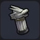 |
드래곤 기둥 | 끄트머리에 용의 머리가 조각된 기둥 ※ 빌더 하트 50 교환 (잠금 해제) |
대리석 6 | 텅 빈 섬 작업대 |
| 사교의 꽃기둥 | 하곤성에 쓰이는 섬뜩한 기둥 | 파괴의 모래 5 뼈 1 |
텅 빈 섬 작업대 | |
| 광장 입구 - 나무 | 나무로 된 광장 입구 ■ 문 |
목재 1 | 텅 빈 섬 작업대 | |
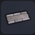 |
광장 입구 - 돌 | 돌로 된 광장 입구 ■ 문 ※ 빌더 하트 10 교환 (잠금 해제) |
석재 1 | 텅 빈 섬 작업대 |
| 나무 발판 | 나무를 잘라 만든 발판 ■ 색 변경 가능 |
목재 2 | 텅 빈 섬 작업대 | |
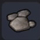 |
돌 발판 | 돌을 잘라 만든 발판 ※ 빌더 하트 10 교환 (잠금 해제) |
석재 3 | 텅 빈 섬 작업대 |
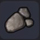 |
돌 발판 - 모서리 | 돌을 잘라 만든 휘어진 발판 ※ 빌더 하트 10 교환 (잠금 해제) |
석재 3 | 텅 빈 섬 작업대 |
| 격자 마루 | 목재를 격자형으로 조립해 물이 빠지도록 만든 바닥 ■ 색 변경 가능 |
목재 3 | 텅 빈 섬 작업대 | |
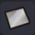 |
유리 바닥 | 투명한 유리로 된 바닥재 ■ 색 변경 가능 ※ 빌더 하트 50 교환 (잠금 해제) |
유리 4 동괴 1 |
텅 빈 섬 작업대 |
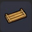 |
나무 다리 | 자른 나무를 가공해 끈으로 연결한 다리 | 목재 4 실 2 |
텅 빈 섬 작업대 |
| 나무격자 | 이동을 방해하는 나무 격자 ■ 색 변경 가능 |
목재 2 실 1 |
텅 빈 섬 작업대 | |
| 감옥의 벽 | 단단한 철로 만든 격자 벽 | 철괴 3 | 텅 빈 섬 작업대 | |
| 나무 창문A | 나무로 된 작은 창문 ■ 색 변경 가능 |
목재 3 | 텅 빈 섬 작업대 | |
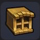 |
나무 창문B | 나무로 된 약간 큼지막한 창문 ■ 색 변경 가능 |
목재 3 | 텅 빈 섬 작업대 |
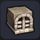 |
돌 창문 | 돌로 된 견고한 창문 ※ 빌더 하트 10 교환 (잠금 해제) |
석재 3 | 텅 빈 섬 작업대 |
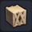 |
모래마을 창문 | 모래와 돌로 만들어 건조한 토지에서 사용되는 창 | 모래 2 석재 1 |
텅 빈 섬 작업대 |
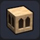 |
모래마을 패인 벽 | 모래와 돌로 만들어 건조한 토지에서 사용되는 구멍 뚫린 벽 ※ 빌더 하트 10 교환 (잠금 해제) |
모래 3 석재 1 |
텅 빈 섬 작업대 |
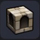 |
성 패인 벽 | 작은 창문이 달린 성벽 | 대리석 2 | 텅 빈 섬 작업대 |
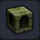 |
사교의 패인 벽 | 작은 창문이 달린 하곤성의 성벽 ※ 빌더 하트 20 교환 (잠금 해제) |
파괴의 모래 5 뼈 1 |
텅 빈 섬 작업대 |